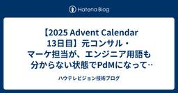
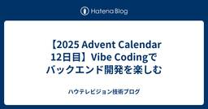
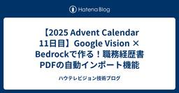
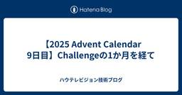
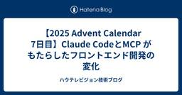
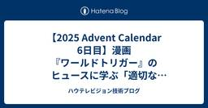

ハウテレビジョン技術ブログ
https://howtv.hatenablog.com/
『外資就活ドットコム』『外資就活ネクスト』『mond』を開発している株式会社ハウテレビジョンの技術ブログです。
フィード

【2025 Advent Calendar 13日目】元コンサル・マーケ担当が、エンジニア用語も分からない状態でPdMになって気づいたこと
ハウテレビジョン技術ブログ
はじめに こんにちは。ハウテレビジョン企画室の比嘉です。 今年は私にとって激動の1年でした。 タイトル通り、年内でマーケティング担当からPdM/PM寄りになり、働き方や関わる人がガラリと変わりました。 キャリアとしては、コンサル→BtoBマーケ→PdM/PMと変遷しており、いろいろな経験をさせてもらっていることに感謝です。 特に今年は、学生エンジニア含め開発チームとガッツリ関わった1年でした。 今回は、エンジニアリングの知見がない中でPdMにチャレンジし、壁にぶつかりながら気づいたことを共有します。 今年やったこと 協会とのイベント企画 ハッカソン運営・企業誘致 中長期戦略策定 プロダクト設計…
1日前

【2025 Advent Calendar 12日目】Vibe Codingでバックエンド開発を楽しむ
ハウテレビジョン技術ブログ
この記事は HowTelevision Advent Calendar 2025、12日目の記事です。 25日まで連続投稿します。 qiita.com こんにちは！新規開発チームバックエンド担当の高です。 5Values中の「Challenge」──今年のテーマにふさわしく、バックエンド開発も大きな変化の波を迎えています。その中心にあるのが、AIと対話しながらコードを書く「Vibe Coding」と思います。 はじめに：Vibe Codingとは 「Vibe Coding」とは、AIツールと対話しながら直感的にコードを生成していく新しい開発スタイルです。従来の「一行一行自分で書く」から、「AI…
2日前

【2025 Advent Calendar 11日目】Google Vision × Bedrockで作る！職務経歴書PDFの自動インポート機能
ハウテレビジョン技術ブログ
この記事は Howtelevision Advent Calendar 2025 の11日目の記事です。 こんにちは！25新卒で入社した木元です。 今年の5Valuesがテーマということで、私が入社して最初にOwnershipを持ってリリースした「職務経歴書PDF自動インポート機能」について紹介したいと思います。 私が所属しているチームでは、中途転職サービスの外資就活ネクストを運営しています。 転職サービスを利用したことがある方なら、一度は「職務経歴の入力が面倒」だと感じたことがあるのではないでしょうか。特に複数のサービスを併用している場合、そのすべてを最新の状態に維持し続けるのは非常に困難で…
3日前
【2025 Advent Calendar 10日目】パンダから年末のご挨拶
ハウテレビジョン技術ブログ
この記事は HowTelevision Advent Calendar 2025 10日目の記事です。 qiita.com ご無沙汰しております。ハウテレビジョンのたかだです。2025年もあと20日余りだなんて信じられないですねぇ…。 毎年年越し前に散髪しようと思うのですが、去年はめんどくさがってクリスマスを過ぎてしまい、慌てて連絡したら当日か翌々日の2枠しかなくてめちゃくちゃ焦りました。今年は早々に済ませたので少しは成長したかもしれません。 この記事を書いているのは2025年12月8日。日付が変わったくらいにF1 2025年シーズンが終わりました。ランドくん、チャンピオン獲得おめでとう。夏の…
4日前

【2025 Advent Calendar 9日目】Challengeの1か月を経て
ハウテレビジョン技術ブログ
この記事は HowTelevision Advent Calendar 2025、9日目の記事です。 25日まで連続投稿します。 qiita.com 本稿では、ハウテレビジョンの5Valuesのひとつ「Challenge」をテーマとして扱います。 こんにちは。ハウテレビジョンの中野です。 昨年もこのカレンダーにおいて「M&A」をテーマにしたブログを作成したのですが、なぜかログイン情報がKeeperに残っておらず、アカウントを作成し直しました。心機一転頑張ります。 さて、今年の私のChallengeはずばり、「採用」です。 ありがたいことに今年から執行役員の位を賜り、最初はM&A担当役員として頑…
5日前
【2025 Advent Calendar 8日目】Stripe Tax に魂を売った話
ハウテレビジョン技術ブログ
この記事は HowTelevision Advent Calendar 2025 8日目の記事です。 qiita.com はじめに こんにちは、黒金セールで散財しすぎた chima91 と申します。 匿名 Q&A プラットフォームである mond の開発をやっております。 先日、mond は 月間アクティブユーザー数が1,000万人を突破 しました! mond、月間アクティブユーザー数が1,000万人を突破 2025年1月の500万人からわずか9ヶ月で倍増し、クリエイターとファンが「問い」を通じてつながる次世代コミュニティとして急成長を続けています。 2021年のリリース以来、漫画家、作家、V…
6日前

【2025 Advent Calendar 7日目】Claude CodeとMCP がもたらしたフロントエンド開発の変化
ハウテレビジョン技術ブログ
この記事は HowTelevision Advent Calendar 2025 7日目の記事です。25日まで連続投稿します。 qiita.com 外資就活ドットコム開発チームの菅です。 私たちのチームのフロントエンド開発における最も大きな変化は、Claude Code + MCPの導入です。 Claude Code自体の力に加え、MCPを接続することで、プロジェクトのコンテキストを統合的に把握できるようになりました。これにより、UI実装からブラウザでの挙動確認までを一貫してAIに依頼できるようになり、開発体験が劇的に変化しました。 Figma MCP MCPを通じてFigmaに接続し、デザイ…
7日前

【2025 Advent Calendar 6日目】漫画『ワールドトリガー』のヒュースに学ぶ「適切なチャレンジを生み出す〆切とハードル」
ハウテレビジョン技術ブログ
この記事は HowTelevision Advent Calendar 2025 6日目の記事です。25日まで連続投稿します。 はじめに はじめまして。「外資就活ドットコム」プロダクトマーケティング部のjunito_jaです。3日目のmm0330と共に、リーダーとしてユーザー向けのメールマガジンやテキストコンテンツの作成、各種イベントの集客、SNS、広告、コミュニティマネジメントなど主にマーケティングに関わる部分を担当・監修しております。 外資就活ドットコムを運営する株式会社ハウテレビジョンでは大事にしているバリューである5ValuesとしてUsers First, Challenge, Ow…
8日前

【2025Advent Calendar5日目】2025年は広報元年～一人広報を成功させるためのTips3選～
ハウテレビジョン技術ブログ
この記事は HowTelevision Advent Calendar 2025、5日目の記事です。 25日まで連続投稿します。 https://qiita.com/advent-calendar/2025/howtv 本日はハウテレビジョンの広報活動について、 広報担当の坂口が弊社の5Valueのうち 「Challenge」に沿って書かせて頂きます！ 2025年はハウテレビジョンにとっての広報元年 現在ハウテレビジョンの広報は1名、「一人広報」として業務を推進しています。 私が2025年5月にハウテレビジョンへ入社してから約半年、 ゼロから広報機能の立ち上げをする中でみえてきた 一人広報を成…
9日前
【2025 Advent Calendar 4日目】AI時代だから本を読もう！2025年読んでよかった本3選
ハウテレビジョン技術ブログ
この記事は HowTelevision Advent Calendar 2025 4日目の記事です。25日まで連続投稿します。 qiita.com こんにちは。株式会社ハウテレビジョンの岡田（10moki_okd）です。 ときは師走。 2025年がもう終わりつつあると思うと非常に感慨深いものがあります。 私、個人の話になりますが2025年は非常に大きな飛躍の1年となりました。 マーケから新規事業立ち上げへ異動となり、初めて営業をしたり、売上責任を持ったりと色々な経験をさせていただき、その結果として2025年のハウテレビジョンの全社MVPを受賞させていただきました。 個人として、色々なチャレンジ…
10日前
【2025 Advent Calendar 3日目】Claude Desktop×自社DBで「就活あるある」（或いはマーケティングの課題）に挑もう
ハウテレビジョン技術ブログ
この記事は HowTelevision Advent Calendar 2025 2日目の記事です。25日まで連続投稿します。 qiita.com はじめに はじめまして。「外資就活ドットコム」プロダクトマーケティング部のmm0330です。 わたしは普段ユーザー向けのメールマガジンやテキストコンテンツの作成、各種イベントの集客など、主にコンテンツマーケティングに関わる部分を主に担当しております。 開発チームの皆様とは業務上での綿密な連携はもちろん、Slackでもプロダクトの方針についてカジュアルに相談したり雑談したり余計なスタンプやBotを作ったりなど、たいへんお世話になっております。 今回は…
11日前
【2025 Advent Calendar 2日目】AIを活用してオニオンアーキテクチャ + DDD のチーム開発を加速させた話
ハウテレビジョン技術ブログ
この記事は HowTelevision Advent Calendar 2025 2日目の記事です。25日まで連続投稿します。 qiita.com アドベントカレンダー2日目は、AIによる開発効率向上に関する取り組みを紹介します！ はじめに 弊社のプロジェクトで、オニオンアーキテクチャ + DDD によるバックエンド開発を行うことになりました。しかし、チーム内でこのアーキテクチャによる開発経験があるメンバーは自分のみ。実装方法やルールをチーム全体に周知する必要がありました。 Claude Code の Skills を活用した実装支援 弊社では積極的に開発へAIを取り入れており、各メンバーがC…
12日前
【2025Advent Calendar1日目】開発部の2025年を振り返る
ハウテレビジョン技術ブログ
この記事は HowTelevision Advent Calendar 2025 1日目の記事です。本日より25日まで連続投稿します。 こんにちは。外資就活ドットコム・外資就活ネクストの開発チームです。 2025年も残りわずかとなりました。アドベントカレンダーの季節ということで、今年1年の開発部の歩みを振り返ってみたいと思います。 今年の開発部は、新機能のリリースやシステム改善といった「作る」活動に加えて、チームのカルチャー作りと外部への発信という新たな領域に本格的に踏み出した1年でした。技術的な成長だけでなく、組織としてどう在りたいか、どう社会と繋がっていくかを真剣に考え、実行に移してきまし…
13日前
🚀 外資就活ネクスト機能アップデート
ハウテレビジョン技術ブログ
外資就活ネクスト機能アップデート：求人との出会いと面接対策を最適化する2つの新機能 この度、外資就活ネクストは、ユーザー様のキャリア探索と選考対策を強力にサポートするため、以下の2つの新機能をリリースしました。 本記事は、技術的な視点だけでなく、「ユーザーの課題解決」と「転職支援体験の向上」というプロダクト視点から、今回のアップデートの背景と開発のこだわりをご紹介します。 「求人特集ページ」 「AI面接対策」 新機能リリース それぞれの機能が、どのような課題を解決し、どのような技術的アプローチで実装されたのかをご紹介します。 1. キャリアを深掘りする新しい入り口：「求人特集ページ」 従来のサ…
16日前
秋の28卒向けエンジニアインターン開催致しました！
ハウテレビジョン技術ブログ
はじめに こんにちは。 今回は2025年11月8日、9日、15日、16日の4日間にわたり開催しました、ハッカソン形式でのエンジニアインターン実施の様子をレポートします。今回のインターンでは、学生の皆さんに実践的な開発経験を通じて、エンジニアとしてのキャリアや弊社の開発文化を知っていただくことを目的としました。 インターン概要 開催日程: 2024年11月8日（金）、9日（土）、15日（金）、16日（土）の計4日間 形式: ハッカソン形式 参加人数: 10名 開催形式: 弊社本社オフィスにてオフライン開催 プログラム内容 スケジュール 4日間のスケジュールは以下の通りでした。 前半2日間（11/…
22日前
セキュリティ棚卸し
ハウテレビジョン技術ブログ
外資就活ドットコム・外資就活ネクストの、インフラや開発環境の改善などプラットフォームエンジニアリングをしている Product Engineering チームです。 昨今、大手企業のサービスがハッキングされ、長期間にわたりサービスが提供できなくなるといった深刻なサイバー犯罪が特段目立つようになってきました。攻撃者はひとつの穴を見つけるだけで良いという圧倒的に防御側が不利な構造で、ひとつの脆弱な点が致命傷になりかないのが怖いところです。 社でも当然セキュリティは意識しているものの、より強固な環境を構築するために、本チームでは第 3 回めの開発 Days のテーマとして、普段集中して取り組みづらい…
24日前
【開発Days vol.3】GA4のscreen_viewイベントにカスタムパラメータを追加してBigQueryで分析する実装ガイド
ハウテレビジョン技術ブログ
株式会社ハウテレビジョンのData And Analyticsチームにいるデータエンジニアです。 開発チームの新たな取り組み "開発Days"とはで紹介されたように、弊社では毎月連続した2日間、通常のプロダクト開発から一時的に離れ、技術的な課題に集中的に取り組む仕組みがあります。 今回は、その開発Days vol.3で実際に取り組んだプロジェクトの一つをご紹介します。 モバイルアプリの分析基盤強化をテーマに、GA4のscreen_viewイベントにカスタムパラメータを追加し、BigQueryでデータマートを構築するプロジェクトに取り組みました。この取り組みは、「未来への投資」カテゴリーに位置づ…
1ヶ月前
「共創型開発」への挑戦
ハウテレビジョン技術ブログ
はじめに 私たちの開発チームは今、新たな挑戦を始めています。それは「共創型開発」という開発スタイルの実現です。これは単なる開発手法の変更ではなく、プロダクト開発に関わる全員の意識とスタンスをさらに高める、チームの進化と言えるものです。 共創型開発とは何か 共創型開発とは、Bizサイドとエンジニアが対等な立場で、プロダクトの課題や価値について議論し、解決策を共に生み出していく開発スタイルです。 ただし、これは「エンジニアが0→1でプロダクトのアイデアを生み出す」ことを期待するものではありません。エンジニアに求めるのは、ビジネスサイドが持つプロダクトビジョンに対して、技術的な知見とユーザー視点を持…
1ヶ月前
How Lab. 第7回開催レポート - 後悔開発王決定戦2025
ハウテレビジョン技術ブログ
はじめに howtv.hatenablog.com 前回の開催レポートに引き続き今月も社内勉強会 How Lab.の開催レポートをまとめていこうと思います。まず、はじめにHow Lab.とは？から説明します。 ハウテレビジョンでは社内技術共有イベント How Lab. を定期的に開催しています。参加者は開発メンバー中心に、最新技術の理解と実践に取り組んでいます。 毎月異なるチームが主催をするのですが、今月はこのブログの筆者が主催を担当して企画させていただきました。企画名は「後悔開発王決定戦2025」です。読んで字の如く、これまでの後悔している開発をLTしようぜという会です。 「後悔開発王決定戦…
1ヶ月前
Amazon ECS で検証環境を動的に生成する
ハウテレビジョン技術ブログ
概要 機能開発時の動作検証を迅速におこなうため、特定のバージョンのサービスを必要に応じて動的に起動し、使い終わったら破棄する仕組みを構築しました。 背景 開発中の機能をローカルだけではなく実際の AWS 環境にデプロイし、プロダクト観点も含めて検証をおこなうことがあります。そのための検証環境を 3 つ用意しておき、デプロイ先を切り替える仕組みを利用していました。各環境は 5 つのサービス (Pod) から構成され、合計で 15 個が常に動作しています。データベースなどその他のリソースは共有します。 この環境での運用には、いくつかの課題が存在しました。 常に複数の環境が動作しているためコストがか…
2ヶ月前
How Lab. 第6回開催レポート – Claude CodeとBedrock×社内データを試す
ハウテレビジョン技術ブログ
ハウテレビジョンでは社内技術共有イベント How Lab. を定期的に開催しています。参加者は開発メンバー中心に、最新技術の理解と実践に取り組んでいます。今月（2025年10月）は「生成AI × 社内データ活用」というテーマで開催しました。その発表の一部を、今回のブログで簡単に開催レポートとしてまとめていこうと思います。弊社がどんなことをやっているのか、少しでも伝われば嬉しいです。 トピックス1: Claude Code Sub Agentで遊ぼう 最近Skillsという新しい機能が登場しましたが、今回は置いておき、Sub Agent機能の活用について（ブログ筆者が）発表しました。エンジニアの…
2ヶ月前
全社員向けAI導入と今後のデータ基盤
ハウテレビジョン技術ブログ
株式会社ハウテレビジョンのData And Analyticsチームにいるデータエンジニアです。 最近では、全社対象にClaudeを導入し、BigQuery MCPやGA4 MCPを経由して社内データを活用した分析促進する取り組みをしています。今日は、Claudeを導入したことでの恩恵や課題についてお話しできればと思っています。 なぜClaudeを導入したのか 2025年4-5月時点で全社AI導入を検討する際、主要なAIエージェントを比較検討いたしました。 比較検討のポイント 検討の段階で重視したのは、以下の3点でした。 データ分析能力: 統計分析の提案・実行、結果の解釈や洞察の質 データ…
2ヶ月前
面倒な職務経歴書づくりは、もう終わり。アプリの新機能「職歴AI生成」をリリースしました。
ハウテレビジョン技術ブログ
この度、外資就活ネクストは、アプリ限定の新機能「職歴AI生成」をリリースしました。転職活動で誰もが一度は手が止まる「職務経歴書」の作成体験を、AIの力で根本から変えていきます。 なぜ今、職歴入力の体験を見直すのか 「外資就活ドットコム」からの同時登録を機に、外資就活ネクストが多くのユーザー様にとって「最初の転職サービス」となる可能性が高まりました。 しかし、"最初の転職サービス"であるということは、ユーザーの皆様がまだ本格的な職務経歴書をお持ちでなかったり、「そもそも何から書けばいいのか分からない」と悩んでいたりするケースが多い、ということでもあります。 職務経歴書の作成は、ご自身のキャリアの…
2ヶ月前
開発Daysでの取り組み: EOL 対応
ハウテレビジョン技術ブログ
外資就活ドットコム・外資就活ネクストの、インフラや開発環境の改善などプラットフォームエンジニアリング的なこともしている Product Engineering チームです。 本チームでは「技術的なボトルネックを解消し、開発効率や品質の向上を実現する」ための対応に普段から取り組んでいますが、その中でもプロダクトに直結しない開発環境用のツールなどは前任者が構築したあとに、十分なナレッジトランスファーやドキュメント整備が行われなかったことから、対応が後手になりがちになっています。 しかしながら言語やクラウドサービスの EOL (メンテナンス終了) は待ってくれません。 通常は優先度が下がりやすい領域…
3ヶ月前
ローンチから13年「外資就活ドットコムアプリ」の技術負債解消 脱Redux
ハウテレビジョン技術ブログ
1. 導入（はじめに） こんにちは、外資就活ドットコムの新規開発チームです。 以前のブログで紹介した「開発Days」。その取り組みの中で、私たちのチームは技術負債の解消をテーマに、アプリの状態管理をReduxから脱却するチャレンジを行いました。 今年でローンチから13年がたった外資就活ドットコムのアプリはReactNativeで開発されており、状態管理にReduxを利用していました。しかし、プロダクトが成長するにつれて複雑さや保守コストが目立つようになり、開発スピードや品質に影響を与えるようになっていました。 本記事では私たちのチームが開発Daysで取り組んだRedux脱却のプロセスについてま…
3ヶ月前
開発チームの新たな取り組み "開発Days"とは
ハウテレビジョン技術ブログ
ご無沙汰しております。 外資就活ドットコム・外資就活ネクストの開発チームです。 半年以上ぶりの投稿になります。 この間、弊社の中途転職者向けキャリア支援プラットフォームである『Liiga』は『外資就活ネクスト』というプロダクト名でリスタートし、直近ではスマホ向けアプリをリリース致しました。 日々機能を進化させているので、ぜひご活用ください。 ・Web：https://next.gaishishukatsu.com/ ・iOSアプリ： https://apps.apple.com/jp/app/外資就活ネクスト-アプリ-ハイクラス転職なら外資就活ネクスト/id6749070764 ・Androi…
3ヶ月前
メリークリスマス！或いは人事労務オペレーションの刷新
ハウテレビジョン技術ブログ
この記事は HowTelevision Advent Calendar 2024 25日目の記事です。 qiita.com 1.はじめに ハウテレビジョンでコーポレート部門を担当している、id:simisin です。 今回は、知られざるハウテレビジョンにおけるコーポレート周りの取り組みについてご紹介します。 2.コーポレート部門の概要 全社では37名（2020年1月末）だった社員が、78名（2024年12月1日現在）まで成長してきました。 うちコーポレート部門の社員は約10名であまり変わっていません。 内局 コーポレート部門は、以下の4つの機能型組織からなっています。 財務・経理部 法務・総務…
1年前
AWS Cognito Migration: Enhancing Security and Efficiency
ハウテレビジョン技術ブログ
稼働中のWebアプリケーションの認証を AWS Cognito に換装する話
1年前
actでGithub Actionsをローカルで実行する
ハウテレビジョン技術ブログ
この記事は HowTelevision Advent Calendar 2024 16日目の記事です。 はじめに Github Actionsをcommit/pushせずにdockerを使って実行するツール act の使い方をご紹介します。 https://nektosact.com/introduction.html インストール Homebrewを使ってインストールします $ brew install act --HEAD 実行可能なworkflowやjobを一覧する -lオプションで実行可能なworkflowやjobを一覧できます $ act -l Apple Silicon搭載のMac…
1年前
2024年データエンジニアの振り返り
ハウテレビジョン技術ブログ
この記事は HowTelevision Advent Calendar 2024 15日目の記事です。 株式会社ハウテレビジョンのPlatform Engineeringチームで主にデータエンジニアをやっているEngineer Managerの縄司です。インフラ基盤やデータ基盤のアップデートを通じて、日々の運用の課題を改善しながら、プロダクトの成長を支えています。 本記事では、今年取り組んだEKSのアップデート、Aurora MySQLのメジャーアップデート、そしてデータ基盤整備のプロジェクトについてまとめます。 EKSのアップデート：基盤の安定性を維持するための計画的な対応 EKS（Amaz…
1年前